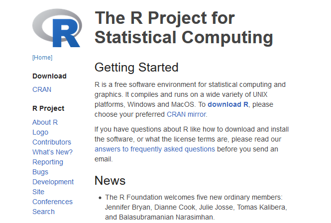
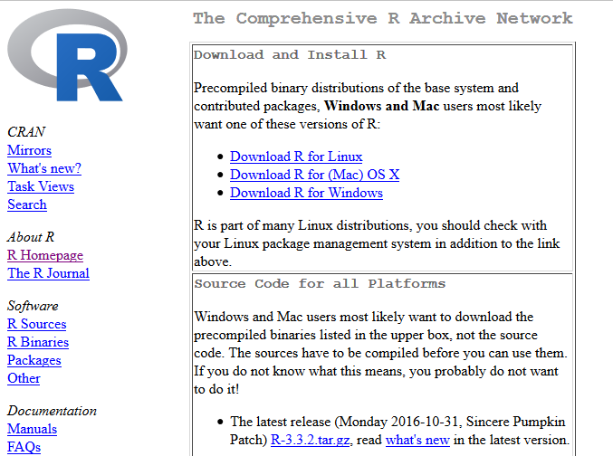
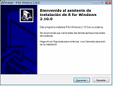
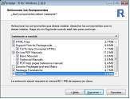
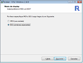

B Instalación de R
En la web del proyecto R (www.r-project.org) está disponible mucha información sobre este entorno estadístico.
|  |  |
| R-project | CRAN |
Las descargas se realizan a través de la web del CRAN (The Comprehensive R Archive Network), con múltiples mirrors:
- Oficina de software libre (CIXUG) ftp.cixug.es/CRAN.
- Spanish National Research Network (Madrid) (RedIRIS) es cran.es.r-project.org.
B.1 Instalación de R en Windows
Seleccionando Download R for Windows y posteriormente base accedemos al enlace con el instalador de R para Windows (actualmente de la versión 3.6.1).

B.1.1 Asistente de instalación
Durante el proceso de instalación la recomendación (para evitar posibles problemas) es seleccionar ventanas simples SDI en lugar de múltiples ventanas MDI (hay que utilizar opciones de configuración).
|  |  |
 |
 |
Una vez terminada la instalación, al abrir el programa R, aparece la ventana de la consola (simula una ventana de comandos de Unix) que permite ejecutar comandos de R al irlos introduciendo.
B.1.2 Instalación de paquetes
Después de la instalación de R, puede ser necesario instalar paquetes adicionales.
Para ejecutar los ejemplos mostrados en el libro será necesario tener instalados los siguientes paquetes: lattice, ggplot2, foreign, car, leaps, MASS, RcmdrMisc, lmtest, glmnet, mgcv, rmarkdown, knitr, dplyr. Por ejemplo mediante el comando:
pkgs <- c("lattice", "ggplot2", "foreign", "car", "leaps", "MASS", "RcmdrMisc",
"lmtest", "glmnet", "mgcv", "rmarkdown", "knitr", "dplyr")
install.packages(setdiff(pkgs, installed.packages()[,"Package"]), dependencies = TRUE)
# Si aparecen errores debidos a incompatibilidades entre las versiones de los paquetes,
# probar a ejecutar en lugar de lo anterior:
# install.packages(pkgs, dependencies=TRUE) # Instala todos...(puede que haya que seleccionar el repositorio de descarga, e.g. Spain (Madrid)).
La forma tradicional es esta:
Se inicia R y se selecciona Paquetes > Instalar paquetes
Se selecciona el repositorio.
Se selecciona el paquete y automáticamente se instala.
Alternativamente se podrían instalar los siguientes paquetes: Rcmdr, RcmdrPlugin.FactoMineR, dplyr y rattle, ya que sus dependencias incluyen los empleados en este libro. La instalación de los paquetes Rcmdr y rattle (que incluyen interfaces gráficas) se describe en el Apéndice C.